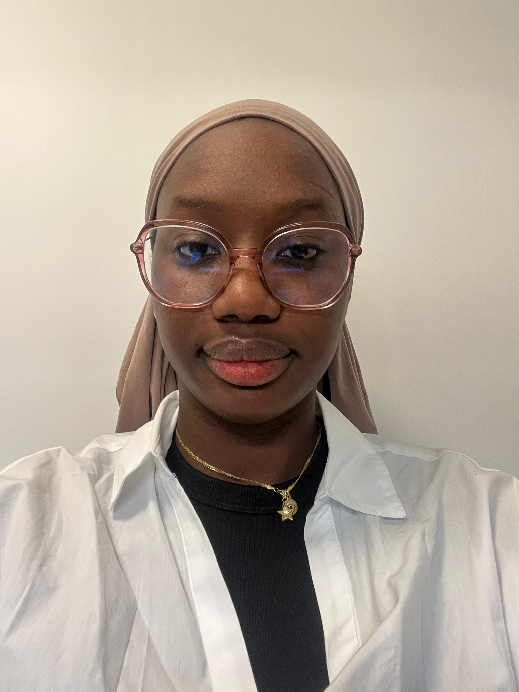

Architecte Systèmes, Réseaux & Développeuse Web Émergente
Mon CV ProfessionnelDans le cadre de mon Bachelor à l'EPSI, j'ai piloté l'intégration et la refonte graphique de l'écosystème web de NET-CO SERVICES, en concevant un site vitrine institutionnel interconnecté avec une boutique marchande e-commerce sous Odoo.
Voici les scripts de personnalisation avancés injectés dans l'écosystème Odoo pour modifier l'expérience utilisateur (UX) et l'identité visuelle de l'entreprise :
<div id="ruban-flottant-netco"> <a href="/contactus" class="ruban-btn ruban-theme-clair">...</a> <a href="/devis" class="ruban-btn ruban-vert">...</a> </div>
section.s_website_form {
background-color: #8cb89f !important; /* Vert d'eau NET-CO */
padding: 40px !important;
border-radius: 15px !important;
}